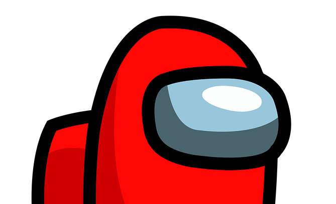
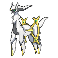

Palkia (Japanese: パルキア Palkia) is a dual-type Water/Dragon Legendary Pokémon introduced
in Generation IV. It is not known to evolve into or from any other Pokémon. Palkia is the game mascot
appearing on the boxart of Pokémon Pearl and its remake Pokémon Shining Pearl. Along with Dialga and
Giratina, it is a member of the creation trio of Sinnoh, representing space.

Dialga (Japanese: ディアルガ Dialga) is a dual-type Steel/Dragon Legendary Pokémon introduced
in Generation IV. It is not known to evolve into or from any other Pokémon. Dialga is the game mascot
appearing on the boxart of Pokémon Diamond and its remake Pokémon Brilliant Diamond. Along with Palkia and
Giratina, it is a member of the creation trio of Sinnoh, representing time.

Giratina (Japanese: ギラティナ Giratina) is a dual-type Ghost/Dragon Legendary Pokémon
introduced in Generation IV. While it is not known to evolve to or from any other Pokémon, Giratina has a
second forme activated by giving Giratina a Griseous Orb to hold, or while it is in its home, the Distortion
World. Its original forme, Altered Forme, will then become Origin Forme. Giratina's Origin Forme was
officially revealed in early February 2008. Giratina is the game mascot of Pokémon Platinum, appearing on
the boxart in its Origin Forme. Along with Dialga and Palkia, it is a member of the creation trio of Sinnoh,
representing antimatter.

